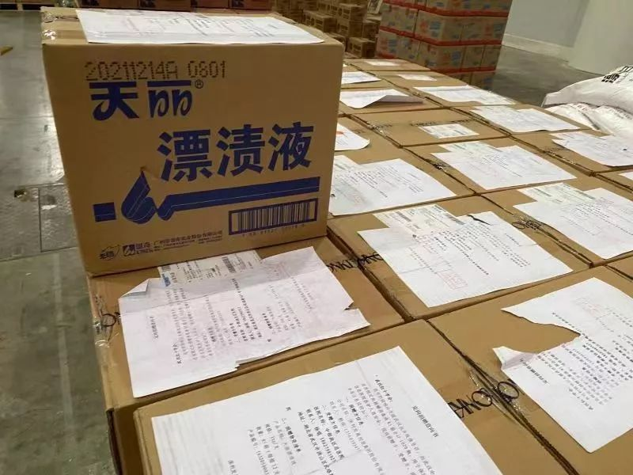
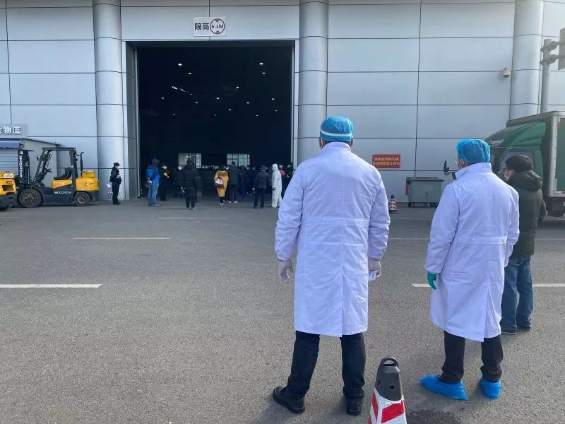
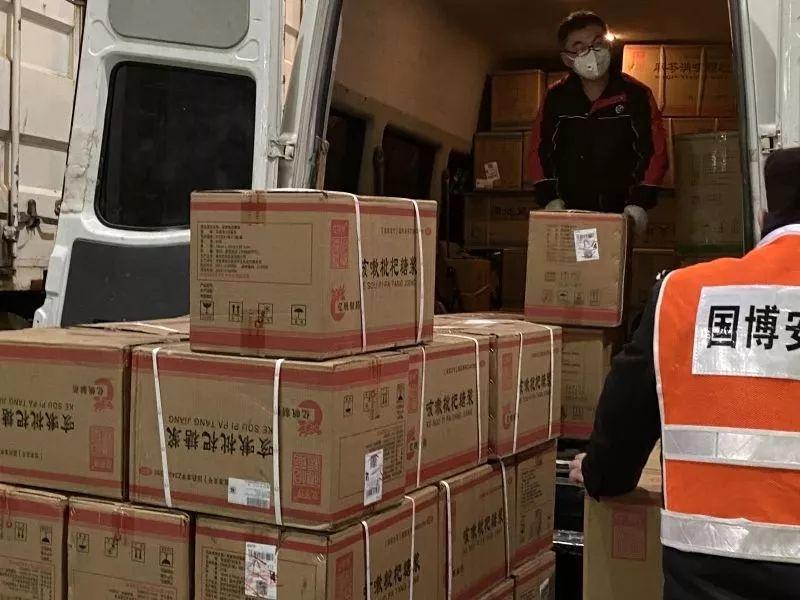
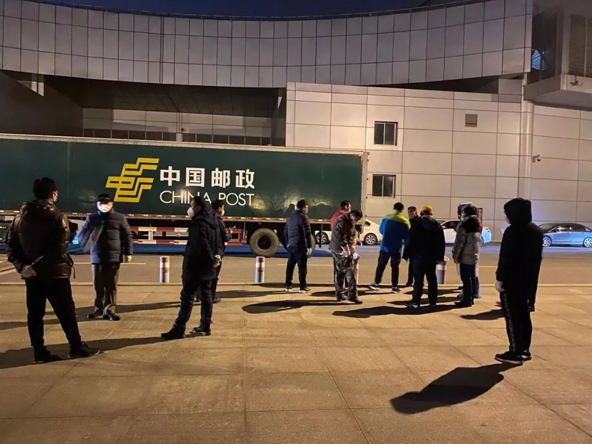

现场 | 湖北与武汉红会，物资捐赠卡在了这里？
原文链接 备份链接 海内外源源不断捐赠武汉，各大医院仍全面告急。被指定接收捐赠物资的主要机构湖北省与武汉市红十字会系统成为众矢之的，他们原本应该为重大突发事件做好准备，却一开始就因专业能力不足遭遇了信任危机。 本刊记者探访了武汉红十字会位 …

武汉市已将所有捐赠物资集中统一调配，这有助于物尽其用，但配送效率亟须提升。这几日陆续有社会捐赠物资送到武汉协和医院，但仅有一线医护人员能穿上防护服，很多医用物资仍然紧缺
文 |《财经》特派记者 刘以秦 信娜 发自武汉
编辑 | 谢丽容
面对武汉不断蔓延的新型冠状病毒肺炎疫情，来自外界的大批捐赠物资近日陆续紧急送往武汉。但从武汉相关医疗机构曝光的情况看，很多急需的医用防护物资并没有及时发放，多个消息源称，大批捐赠物资被湖北省和武汉市红十字会所集中掌控。
1月31日，多个消息源称，武汉国际博览中心（下称“武汉国博”）堆放了大量红十字会的物资，但无法得到及时配送，个别医疗机构前往领取物资时受到刁难。
当晚8点，《财经》记者抵达武汉后直接来到武汉汉阳区白沙洲大桥附近、靠近长江边上的武汉国博A馆，夜色笼罩中的国博中心看到什么人，显得比较安静。《财经》记者没有遇到明显的阻拦，走进近万平方米的A馆，看到里面堆放着大量物资等待运送，其时相关物资运送工作已在进行中。
《财经》记者看到，现场物资包括成箱的医用口罩、消毒液、手套等，还有各类成箱包装的药物，包括感冒颗粒、止咳糖浆等，以及各类生活物资，包括食品、日用品等。



一位在现场的红十字会志愿者告诉《财经》记者，救援物资目前的流转流程是：社会捐赠物资集中运送到这里，由现场的仓储管理团队统计成表格，将物资信息发送至疫情指挥部，由指挥部统一按需调配。他同时提到，《财经》记者在现场看到的物资都是最近1-2天送到的，还有大量是当天下午才送到，还未来得及运送出去。

另一名现场工作人员向《财经》记者表示，他们已经好几天没有休息了，一直在进行物资调配工作。《财经》记者初步统计发现，现场搬运货物的工作人员大约20名；场馆内简易办公室里，还有4名红十字会的工作人员一直在接打电话，表示没有时间接受媒体采访；场馆外还聚集了十几名等待运货的司机，他们来自中国邮政以及武汉本地的国有企业。
2月1日上午，《财经》记者再次来到武汉国博中心A馆。相比前一天晚上，现场增加了更多的安保人员，除工作人员外，其他人一律不得再进入仓库察看。现场聚集着多家武汉医院的医护人员，他们接到通知来领取物资，多名医护人员告诉《财经》记者，还在等待消息，不能立刻拿到物资。
一位刚刚交班的红十字会工作人员则告诉《财经》记者，由于各方面领取物资的需求量太大，国博中心库存的医疗物资也已经告急。
截止2月1日11点55分，中国各地新型冠状病毒感染肺炎确诊病例11823人，疑似病例17988人，死亡人数259人，治愈人数249人。其中，湖北仍然是重灾区，武汉则中重中之重。
一线医院目前均处于物资紧缺状态，武汉市的医疗物资配送由政府和红十字会统一调配，物资能否得到及时快速配送，处于疫情一线的武汉，医疗物资供应情况究竟如何？
僧多粥少，防疫物资全线告急
“我们是市7院的护士，来领物资。”两名护士在1月31日晚上9点左右赶到国博，她们告诉《财经》记者，是收到了红十字会的通知，让她们来领取物资。
工作人员一直在问，“介绍信在哪？”其中一名护士急忙翻出手机里保存的文件照片，并催促工作人员，“能不能多分一点给我们。”得到的回应是，能分到的物资并不多。
2月1日上午，越来越多的医护人员赶到国博现场，他们都是接到了红十字会的电话通知，请他们过来领取物资，现场一位湖北省中医院的医护人员告诉《财经》记者，他们来了好几个人，只允许一位医护人员进入仓库，也不清楚具体能拿到多少物资。目前医院的防护装备已经告急，“最多还能支撑1-2天。”
武汉龙阳医院的书记张和平也来到国博现场，他提到过去一段时间，他们收到了来自卫健委提供的物资中，很多都不符合医疗标准，“很多都是防尘服而不是防护服，口罩大部分是普通口罩而不是N95。”他今天接到领导通知来领取物资，到达现场后，被告知没有物资可以领取。
对于物资缺口问题，《财经》记者询问了一位红十字会物资调配信息部的志愿者，他表示，“疫情时期，所有医疗物资的使用量是之前的20倍，比如协和医院，普通时期一天口罩消耗量在1000-2000只，现在一天需要4万只，这种情况下，物资再多也不够用。”
“我们从除夕开始就没有休息过，大量的志愿者都参与进来，没日没夜的干活，我们也很着急，可是物资缺口摆在那里，大家都没办法。”
1月25日，该志愿者接到来自韩国一家企业的电话，称有500万只KF96口罩想捐赠给武汉，他一直在跟进这条捐赠信息，3天后，对方发来信息表示，韩国有关部门禁止这批物资出口。
“目前所有的口罩厂都已经被政府接管了，但现在的情况是全国人民都在抢口罩，哪里能保证有那么多口罩呢？”这位志愿者说。
物流受限，民间捐赠走不通了
1月23日武汉封城，1月27日武汉市严禁私家机动车出行。在当地人看来，这一举措能够抑制疫情扩散，但物资运送却成了大问题。
李一是一名武汉人，自疫情开始之后，他就自发组织了一个四人的物资运送小队，他们共筹集了20万元捐款，包括8万只口罩，近1万套防护服等。他认识不少一线的医生护士，拉了几个物资对接的微信群，先询问医护人员有哪些物资需求，然后去采购，送到医院。
武汉某定点医院的医生告诉《财经》记者，由于大量捐赠物资并不符合医疗规范，医护人员都会在接受捐赠前，提前说明需要的物资型号、数量，来保证效率，避免浪费。
该医生同时提到，医院和医生都在自发的对外发布求助信息，“多一个求助渠道，就多一分希望。”
但这样来的民间捐助物资已经很难直接送到医院。李一的团队采购的最后一批物资于27日送达，他表示，之后就再也运不进来了，“如果是拉着医疗物资的货车，会被政府拦下来，运给红十字会，再由他们统一调配。”
他筹集到的一批医疗物资，包括2万套防护服，运送到武汉时，被政府人员拦下，称要送到红十字会，他试图追问物资流向，但并未得到任何回复。
他捐赠的最后一批物资，包括4万只口罩，2000套防护服，在微信群里通知各医院来领取，一次来了近40家医院，最后每家医院能分到的物资很少。
对于武汉政府和红十字会的举措，不少人表示不满也不理解，“你直接能立刻送过去我们都认可，但是物资去了哪？医院已经火烧眉毛了，哪怕物资不符合标准，也总比什么都没有强。”
1月30日，湖北省红十字会公布的捐赠信息显示，目前已经配送6万只N95口罩至省疾控中心，3000只N95口罩给协和医院，3万只口罩给荣军医院，1.6万只N95口罩给武汉仁爱医院，1.6万只N95口罩给武汉天佑医院。
这也是目前湖北省红十字会披露的第一份物资发放信息，共计17条，总计金额862.46万元，截止1月31日，湖北省红十字会共计收到捐赠物资、款项金额总计4.46亿元。
前述志愿者称，大量的工作人员都在前线派送物资，信息披露环节会滞后于实际的工作情况，“我们的首要工作是救灾抢人命。”
对于为何组织民间组织和个人定向捐赠给物资给医院，该志愿者称，现在是疫情传播期，应尽量减少人员流动，另外如果不能统一配送，会出现物资分配不均的现象，并且现在不符合标准的物资太多，“医疗物资就是医生手里的枪，如果不合格，怎么上战场？”
但问题是，“枪”不能及时有效送到医护人员手中，他们又如何上战场？





混水摸鱼，集中管控物资利弊
感染患者和疑似病例数量还在不断上升，武汉本地已经出现病床供不应求，医生防护装备紧缺问题已经迫在眉睫，当务之急就是尽可能的解决物资难题。
但在大范围的物资紧张和物资流转过程中，冒领物资、诈骗物资的情况已经出现。湖北省中医药的一名医护人员提到，他们此前去卫健委领取分配物资，但被告知已经领走了，不能重复领取，他们调出领取人姓名，发现并不是省中医的工作人员。
另一家定点医院的医生也提到，有人冒用他们医院的名称去社会上募集物资。多名参与物资捐赠配送的人员告诉《财经》记者，冒领物资再坐地起价的情况已经出现，一些地方口罩已经卖到25元一只。
1月31日，武汉市委书记马国强对外表示：“我们强调所有捐赠物资一定要通过红十字会，目的就是要让捐赠者捐赠的物资、资金的使用能够及时准确的登记在案。”
针对这种情况，由政府统一管理，能够有效解决物资按需分配，但组织民间组织和个人定向捐赠的行为，并不符合《公益事业捐赠法》的有关规定。
《公益事业捐赠法》规定，公益性社会团队（基金会、慈善组织等）和公益性非盈利的事业单位（公益性教育机构、科研机构、医疗卫生机构等）都可以接受捐赠。
浙江十阳律师事务所律师姜旭日告诉《财经》记者，民间捐赠行为属于民事法律行为，适用民事法律规定，只要捐赠方和受赠方就捐赠内容达成协议，捐赠物资合法，其他机构和部门无权干扰。
湖北省中医院的医护人员表示，他们也认可政府统一配送物资，但前提是有足够的人力物力资源来组织调配，目前他们接受的所有物资，都是由医护人员去各个地方领取，包括红十字会的仓库，卫健委的仓库甚至机场。“如果政府把物资都送到医院，就不会出现冒领的情况。”
1月31日，湖北省召开新型冠状病毒感染的肺炎疫情防控工作新闻发布会，武汉市政府党组成员李强在会上提到，红十字会的捐赠是满足需求的重要渠道，医院物资有多种原因，消耗量大于供应量，但捐赠的物资和急需的没有很好的对应。同时，工作中也存在差距，周转不够快，调拨不够及时。
前述红十字会志愿者也提到，他一天能接到20-30个电话，询问为何物资不够，“现在物资的需求量急剧增长，全国人民都在盯着红十字会，监督是好事，但是希望大家不要拿放大镜看我们，也不要过度炒作。”
2月1日上午11点，这名志愿者交班离开武汉国博中心，他收到来自医院的物资求助信息，想自己搬运一部分物资先送过去，但是他并没有相应的物资配送手续。
暂解燃眉，协和仍需医用物资
2020年2月1日上午10点多，武汉协和医院内，工作人员正在搬运新的物资，一车羽绒服。现场捐赠方负责人对《财经》记者说，天气凉，希望医生能暖和点。这车羽绒服将交由医院总务处，由各科室申请后，分发。
这位工作人员装备齐全，身穿白色防护服，戴着防护眼镜、口罩和手套。她提醒在现场《财经》记者，最好穿上防护服，医院毕竟是疫情高危区。
另一边，几名寻常打扮的医院工作人员上来帮忙，穿着常见的白大褂，戴着口罩，一位医生的口罩还有呼吸阀。他告诉《财经》记者，这是自己从家里带着来的，能更保险一点。
至于防护服和眼镜，在场帮忙搬运和清点物资的医护人员身上均未见到。“防护服多珍贵啊！”一位协和医院医护人员说，“只有一线人员才能穿。”因为每天都要换，不可能一件防护服用好几天，所以非一线的医护人员只能穿白大褂。作为后勤人员，他每天可以获得一个N95口罩和一付医用手套。
防护服到底有多珍贵。一位负责人说：“节省节省再节省，压缩压缩再压缩。”为了节省，现在医院不允许医护人员来回进出病房，于是出现了有的医生要憋尿好几个小时，不能喝水，不能上厕所。进入医院疫情高危区以后，医生就尽量不出来，因为每出来一次，就要重新更换防护服。
在武汉协和医院食堂一侧，《财经》记者见到有工作人员在清点少量个人及企业捐赠。两名工作人员推车搬运两箱口罩，一箱1000个。其中一位拍着箱子说，这一箱口罩一天都不够。“一个医生每4个小时要换一次口罩，一天的用量至少是5000个”。


2月1日，武汉协和医院内，医护及工作人员正在搬运物资
是何道理，红会拒收捐赠衣物
武汉协和医院的工作人员告诉《财经》记者，这几日陆续有社会捐赠物资到达医院。
正在帮忙搬运的医院保安人员说，昨天也有物资过来。“上午11点的时候，来了两箱口罩和防护眼镜的医疗物资”。“每天到的物资不一样，有些会提前联系医院配送的时间，个人捐赠一般会直接送过来”，上述工作人员说。
不过从专业角度来看，部分来自个人捐赠的医用物资并不符合标准。根据协和医院官网发布的信息，防护服需要符合 GB19082-2009《医用一次性防护服技术要求》标准。并提示二级以上医用防护服，一般衣服上有红蓝条纹。
有关人士告诉《财经》记者，如果捐赠物资符合这个标准，对一线医护人员会更有用。上述负责人说，防护服一定要是医用的。一些捐赠物资可能一线人员用不了，但行政和后勤人员可以用。
这车羽绒服还没卸完，另一辆装着秋葵和黄瓜的卡车已开进医院。从三亚到武汉，王木和老公一路开车用了30多个小时送达，他们说，一路上并没有遇到太多困难，“我们有相应的证件，各个路口就会放行。不过到服务站需要检查体温，一路上七八次吧”。
《财经》记者在武汉协和医院看到，通行证核发单位为“海南省交通运输厅”，名称为“新型冠状病毒感染的肺炎疫情防控应急物资及人员运输车辆通行证”。
2月1日，《财经》记者在武汉协和医院的两个小时内，先后看到5批物资车陆续到达，除医用消毒水等，还有蔬菜、牛奶等生活用品。“还得保证病人和医护人员的吃饭问题”，上述负责人说。
这期间，《财经》记者尚未发现经由红十字会转运而来的物资。对于是否委托红十字会捐赠，一位现场捐赠者予以否认。“我看他们现在刷屏了，”她说，之前她所在的公司曾与武汉及湖北红十字会联系捐赠羽绒服的事，但对方不感兴趣，后来他们直接与武汉协和医院联系，得知医院非常需要，便直接通过邮政配送过来。
对于湖北及武汉红十字会为何拒收这些羽绒服，截止发稿未得到相关方面的回应。
《财经》特派记者将继续从武汉一线发来相关报道，敬请关注。
本文图片由刘以秦、信娜拍摄
本文由树木计划作者【财经杂志】创作，独家发布在今日头条，未经授权，不得转载
新型冠状病毒疫情系列报道

▷ 点击图片查看
责编 | 黄端 duanhuang@caijing.com.cn
本文为《财经》杂志原创文章，未经授权不得转载或建立镜像。如需转载，请在文末留言申请并获取授权。
原文链接 备份链接 海内外源源不断捐赠武汉，各大医院仍全面告急。被指定接收捐赠物资的主要机构湖北省与武汉市红十字会系统成为众矢之的，他们原本应该为重大突发事件做好准备，却一开始就因专业能力不足遭遇了信任危机。 本刊记者探访了武汉红十字会位 …
原文链接 备份链接 国内外的口罩都在送往武汉，可武汉医院的不仅缺口罩，甚至即将用完。人民日报在其官微发问：究竟是物资紧缺还是物资分配环节存在问题？ 截止到目前，协和医院收到的物资全部来自企业和个人捐赠。物资直接对接到各地疫情指挥部或是各 …
原文链接 备份链接 在这场抗击新病毒的战争中，一线医护人员不得不为自身防护揪心，他们和医院、捐赠人一起被迫卷入一场医疗物资的募捐赛 文 |《财经》记者王丽娜 辛颖 编辑 | 王小 这是历次疫情中，一线医院大批量第一次直接向公众募捐，也是 …
原文链接 备份链接 01.02.2020本文字数：3601，阅读时长大约6分钟 导读：关于一线医院防护物资紧缺的消息满天飞，湖北省红十字会、武汉红十字会物资分配效率和公平性问题引发质疑。 作者 | 第一财经 李澄晚 1月31日下午，涂先 …
原文链接 备份链接 *************▲************* （武汉红十字会官网截图/图） 全文共*3412*字，阅读大约需要7分钟。 “在物资发放这块，不会说我们想给谁就给谁，所有的分配由卫健委和防控指挥部来决定。” …